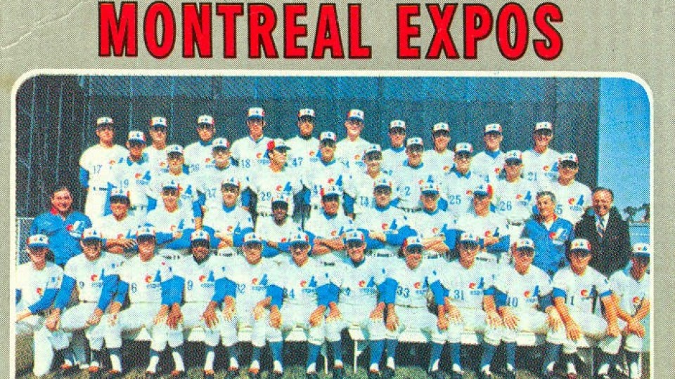
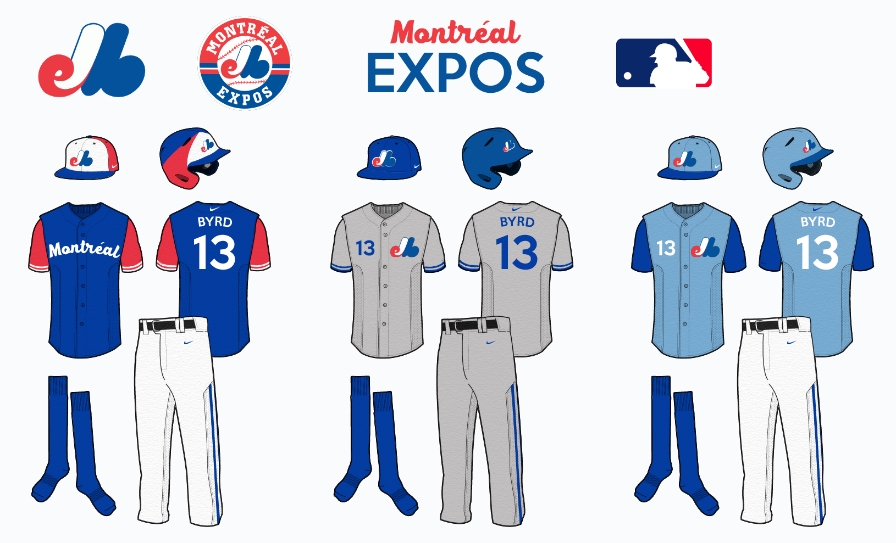

Fondation de l'équipe
L'expansion de la Ligue Nationale

Première équipe des Expos de Montréal
La Ligue nationale décide donc à son tour d'ajouter
deux équipes, pour faire passer son nombre de
franchises de dix à douze. Cinq villes sont sur les
rangs pour les deux franchises
disponibles : Buffalo, Dallas, San Diego, Montréal
et Milwaukee (qui vit ses Braves quitter pour
Atlanta après la saison 1965).Du lot, la
candidature de la ville californienne de San Diego
semble la plus solide, et la Ligue nationale annoncera
effectivement l'avènement des Padres. La candidature de
Montréal sort de l'ordinaire car jamais une ville située
au Canada n'a fait partie de la MLB.
En 1967, le maire de Montréal, Jean Drapeau, mandate le vice-président du Conseil exécutif de sa ville, Gerry Snyder, pour faire les démarches afin d'obtenir pour Montréal une franchise de baseball majeur. Montréal est à cette époque une ville en pleine expansion. Sa population a franchi le cap des 2 millions d'habitants et la métropole vient d'enregistrer un important succès populaire avec la tenue de l'Exposition universelle de 1967. Cet événement a de plus amené l'ouverture du métro de Montréal et l'inauguration de l'Île Notre-Dame. La Place des Arts ouvrit ses portes à la même époque. De plus, Montréal est sur les rangs pour l'obtention des Jeux olympiques d'été de 1976, qu'elle obtiendra dans les années suivantes. Enfin, la ville de Montréal abrite une population supérieure à onze des vingt villes possédant déjà une franchise des majeures, et compte le plus grand nombre d'habitants parmi les cinq villes candidates.
Le lundi 27 mai 1968, le président de la Ligue nationale de baseball, Warren Giles, annonce aux médias rassemblés à l'Hôtel Excelsior de Chicago, Illinois, que deux franchises joindront les rangs de la Ligue nationale au printemps 1969, et que ces deux franchises seront localisées à San Diego et à Montréal.
La question du stade
Le maire Drapeau propose de modifier la configuration de l'Autostade pour en faire un stade approprié pour des matchs de baseball, d'augmenter le nombre de places de 25 000 à 37 500. Surtout, il s'engage à faire construire un stade de baseball doté d'un toit amovible qui serait prêt à temps pour la saison 1972.
Ce sera finalement le Stade Jarry qui accueillera l'équipe en 1969, en attendant la construction du Stade olympique de Montréal.
Première équipe de direction
- Propriétaire : Charles Bronfman
- Président : John McHale
- Directeur-gérant : Jim Fanning
- Gérant : Gene Mauch
Nom, logo et uniformes
Le 14 janvier 1969 sont officiellement dévoilés le logo, les couleurs et les casquettes de la future équipe.
Le logo de l'équipe consiste un monogramme qui représente un « M » stylisé pour « Montréal », composé d'un « e » en rouge flanqué d’une barre blanche pour former un « d » et d’un « b » en bleu pour « équipe de baseball » Le logo est légèrement modifié en 1992, alors que le « m » original est intégré à un dessin de balle de baseball entourée d'un cercle rouge et bleu. Les uniformes ont été légèrement modernisés au fil des ans mais sont sensiblement

Uniformes des Expos de Montréal
demeurés les mêmes (blanc pour les matchs à domiciles
et bleu pâle à l'étranger) jusqu'en 1992. À partir
de cette saison, l'uniforme à domicile est blanc
avec de minces lignes verticales bleues et le mot Expos
apparaît sur la chemise, au lieu du logo original comme
par le passé. Pour les matchs à l'extérieur, les joueurs
endossent un uniforme de couleur grise où le mot
« Montréal » remplace « Expos » sur la chemise, l'accent
sur le « e » du nom de la ville étant représenté
par une fleur de lys, emblème du Québec. C'est
également en 1992 qu'est abandonnée la fameuse
casquette tricolore, remplacée par une bleue.
Dans les années 2000, on a également vu
apparaître à l'occasion, comme casquette
« alternative » pour certains matchs, une casquette
rouge arborant l'insigne des Expos.
Les Expos de Montréal doivent leur nom à l'Exposition universelle de Montréal (Terre des Hommes), tenue en 1967. Leurs couleurs d'équipe furent le bleu, le blanc et le rouge, rappelant ainsi les origines françaises de la ville de Montréal.